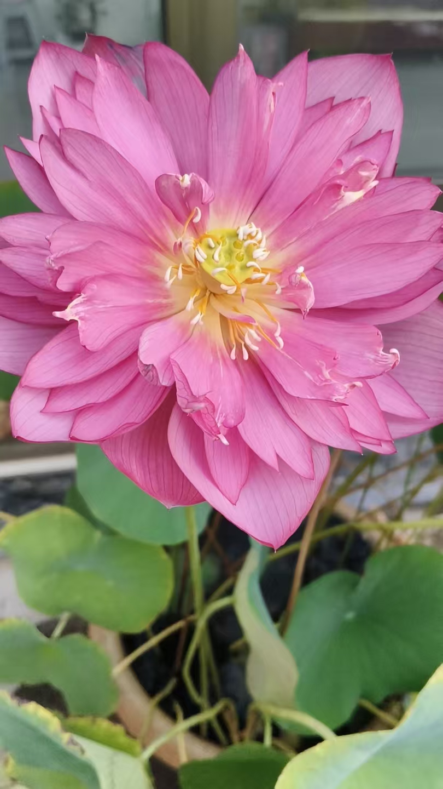
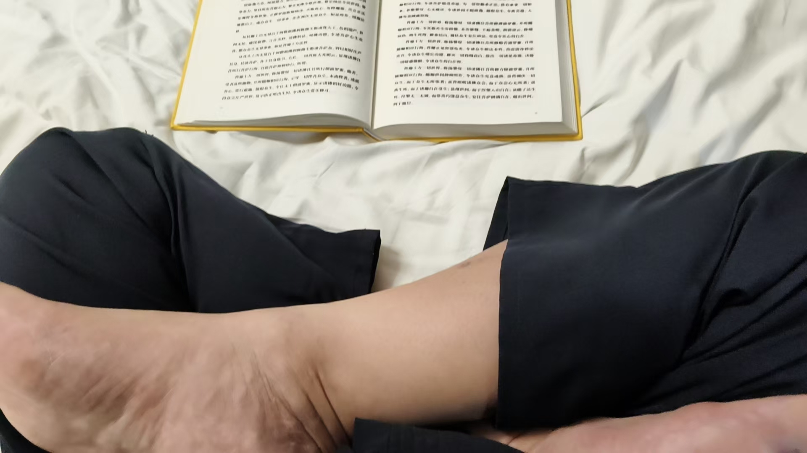

20260804华严经，活脱脱一个咱们心法修炼的细节
风水布局修炼修行 原始对话记录
自驾进京教学
[强]
手热，脚热
步骤
小腹热
全身温热
并且，需要化解，脚热，跟阳宅有关
小腹热，跟因果有关
脊背热跟阴宅有关
并不是手热胳膊热
[呲牙][呲牙]
全身热，跟福德有关
新解
[呲牙][呲牙][呲牙]
[强][强][强]
华严经，活脱脱一个咱们心法修炼的细节
妙哉
这法华经还真不是一般人读的了的
没有那么大的心
大心大相大智慧

双盘读经
身体比以前柔软多了
以下为编者整理的主题文章
编者整理 · 主题文章
脚热，小腹热，脊背热，全身热
导读：这一页把身体的"热"逐处对应起来——脚热跟阳宅有关，小腹热跟因果有关，脊背热跟阴宅有关，全身热跟福德有关。另有一句对《华严经》的话：活脱脱一个心法修炼的细节。
这一页很短。自驾进京教学的路上记的，配一张图。
图上是一列步骤。手热，脚热，小腹热，全身温热。
下面把这几个热一一对上了。脚热，跟阳宅有关。小腹热，跟因果有关。脊背热，跟阴宅有关。全身热，跟福德有关。
师父补了一句，并不是手热胳膊热。是要按着顺序走的，并且，需要化解。
我在这四行上看了很久。身体上的温度，对上宅子，对上因果，对上阴宅，对上福德。这四样东西平时各在各处，这里被一件一件摆到同一条线上。
再往下换到经。华严经，活脱脱一个咱们心法修炼的细节。妙哉。
说是细节，是因为经里不抽象。什么时候做什么，身体该有什么反应，一条一条写在那里，像一份手册。别的读经记录里也这样讲：华严要一句一句在脑海里成像，速读用不上。
接着说法华经。这法华经还真不是一般人读的了的，没有那么大的心。大心大相大智慧。
最后一句配着图：双盘读经，身体比以前柔软多了。
我把这几句抄下来。抄到"身体比以前柔软多了"的时候停了一下。前面讲的是热，讲的是经，最后落回身体上。坐着读，坐久了，身体软了。就这一句放在那儿，没有再多说。
说明与免责：本站为民间修炼、民俗文化与传统文化资料的整理与记录，内容源自传承者口传与个人修习体会，仅供文化交流与研究参考，不构成医疗、健康、投资或任何功效承诺。所述内容属传统术数范畴，请理性看待；如身体不适，请及时就医。请遵守法律法规与公序良俗。